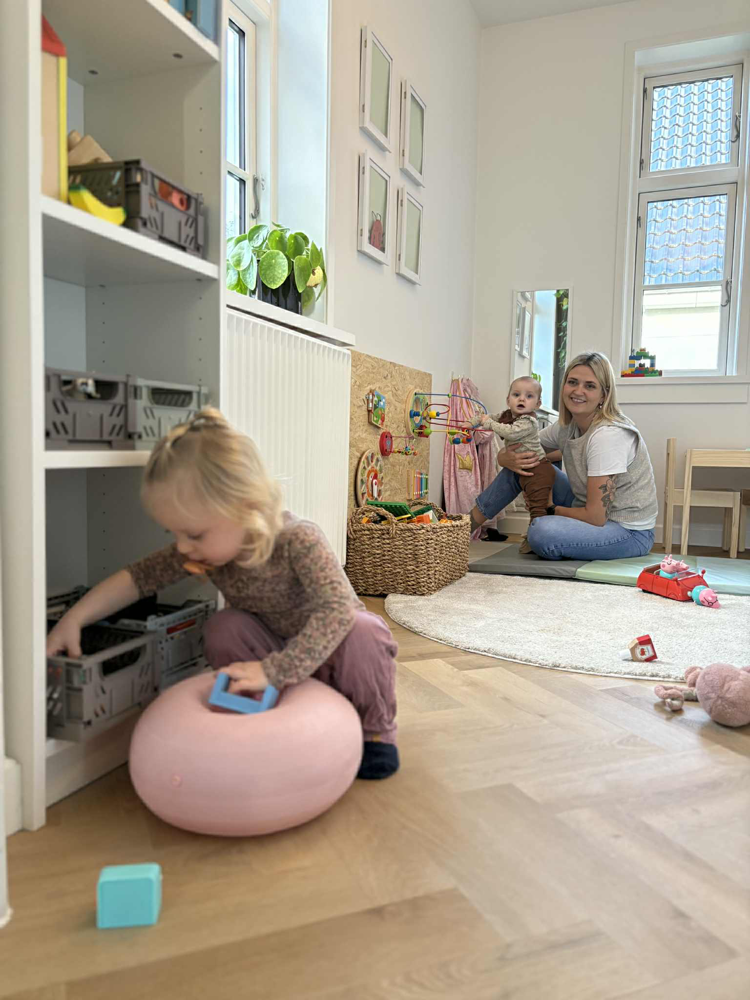
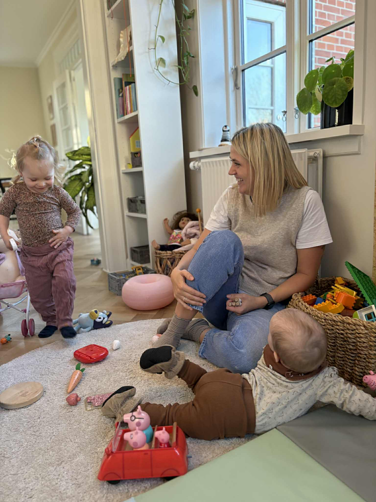

Ferie og lukkedage
Ved ferie og lukkedage skal forældre selv sørge for alternativ pasning.
Ferie
Jeg holder 6 ugers ferie om året:
- 5 hele uger
- 1 uge spredt over året
Ferieplanen for det kommende år offentliggøres på hjemmesiden den første hverdag i januar.
Lukkedage
Helligdage
Pasningsordningen er lukket på alle helligdage.
Juleferie
Pasningsordningen er lukket mellem jul og nytår.
Lukkedage 2026
Marts
Ingen lukkedage denne måned
April
2. april
Skærtorsdag
3. april
Langfredag
6. april
2. påskedag
Maj
14. maj
Kristi himmelfartsdag
15. maj
Dagen efter Kristi himmelfartsdag
25. maj
2. pinsedag
Juni
Ingen lukkedage denne måned
Juli
Ingen lukkedage denne måned
August
Ingen lukkedage denne måned
September
Ingen lukkedage denne måned
Oktober
Ingen lukkedage denne måned
November
Ingen lukkedage denne måned
December
24. december
Juleaften
25. december
1. juledag
26. december
2. juledag
27-30. december
Mellem jul og nytår
31. december
Nytårsaften

